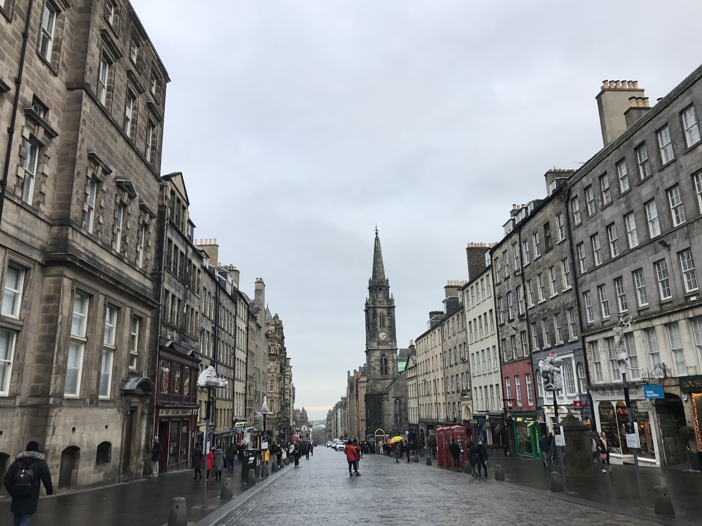
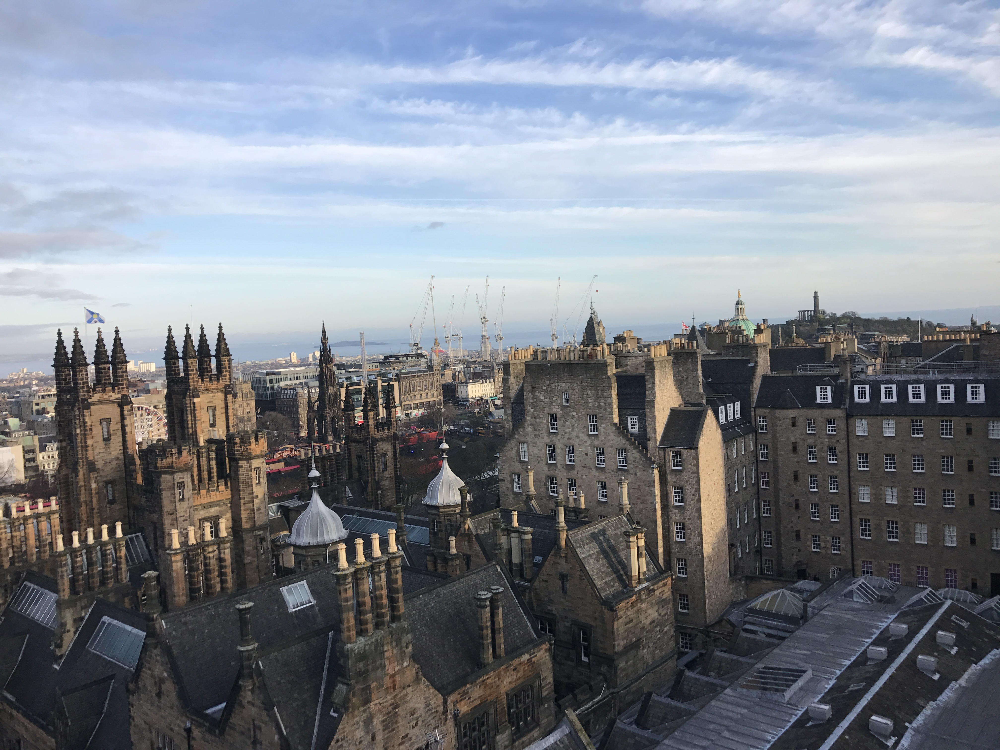
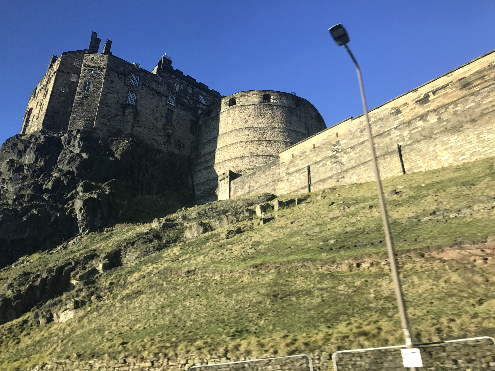

This colorful street is named Victoria Street and is said to have inspired Harry Potter's Diagon Alley. Being as though my brother is a HUGE Harry Potter fan, he had a blast seeing the street that was said to have inspired the famous shop filled alley in the books and movies.
This street is called "The Royal Mile." It spans close to 1 mile and is one of the most popular tourist streets in Scotland. It is full of restaurants, museums, cafes, and churches.
This is Scotland's beautiful skyline. Edinburgh (where this image was taken) is often recognized around the world for it's beautiful architecture. My family had the best time walking the streets of Scotland and taking in all of the beautiful architecture.
This is Edinburgh Castle. Each August, the castle hosts The Royal Edinburgh Military Tattoo, which is a display of music and the armed forces.